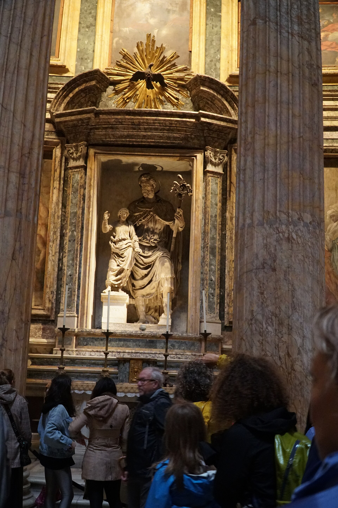
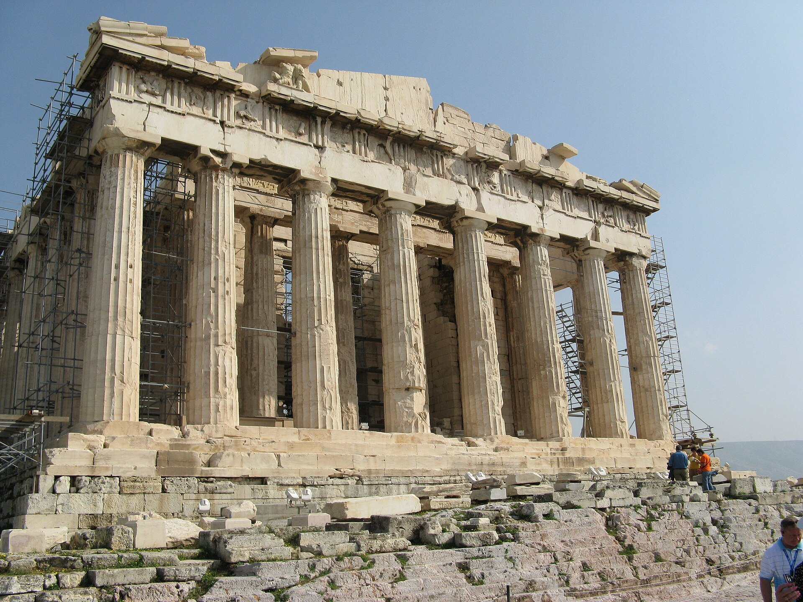
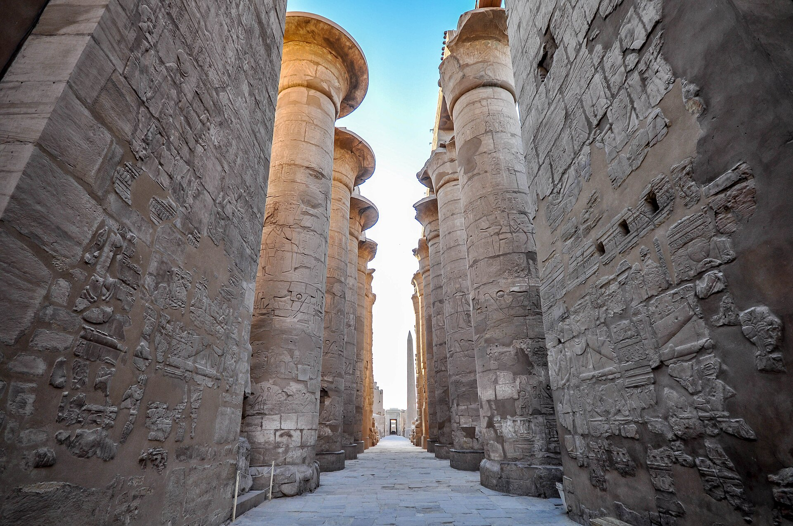
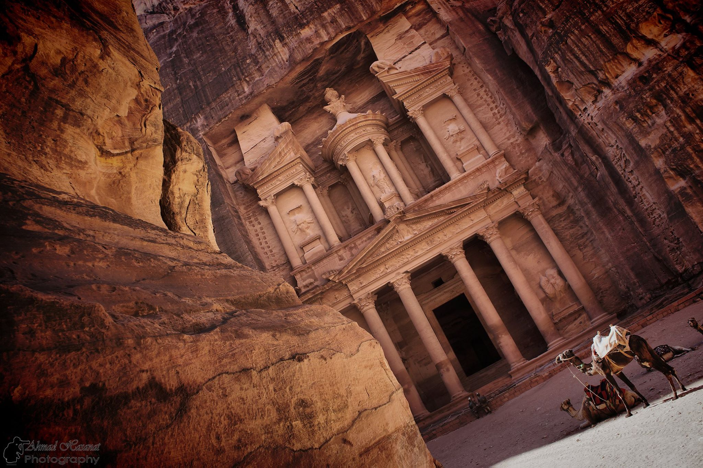

01 — The premise
Built to hold more than weight.
Ancient architecture carried belief, power, civic identity, and technical knowledge. Its enduring forms reveal how civilizations understood the world—and their place within it.
Selected monuments
A global collection
Move through three landmark works, each shaped by a different relationship between engineering, landscape, and ritual.
Ways of building
Three enduring ideas
Monuments differ in material and purpose, yet the same architectural ambitions recur across place and time.
I
Span
Roman arches, vaults, and concrete enclosed spaces at a scale that transformed civic life.
II
Axis
Chinese complexes used layered thresholds and strong central alignments to express order and hierarchy.
III
Landscape
From Petra to Angkor, terrain and water became active parts of the architectural composition.
Material intelligence
Every monument begins as a negotiation—with gravity, climate, ritual, and time.
Across civilizations
An atlas of forms
Six places, six architectural responses to permanence.
Rome
Pantheon
Concrete & volumeChina
Great Wall
Terrain & defense
Greece
Parthenon
Order & proportion
Egypt
Karnak
Procession & stoneKhmer Empire
Angkor Wat
Cosmology & water
Nabataea
Petra
Rock & exchangeIn motion
Walking the Acropolis
Architecture is understood in sequence: approach, threshold, compression, and release. This short archival tour moves through the Parthenon and its setting.
Film by Ian and Wendy Sewell, 2002 · Wikimedia Commons
Credits & further reading
Sources
Historical summaries were informed by the UNESCO World Heritage Centre. Media is locally hosted for this project and remains subject to its original license.